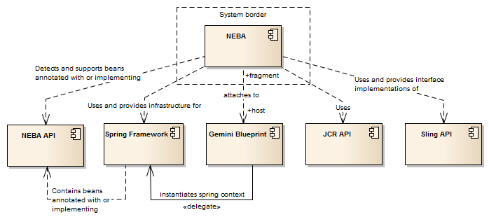
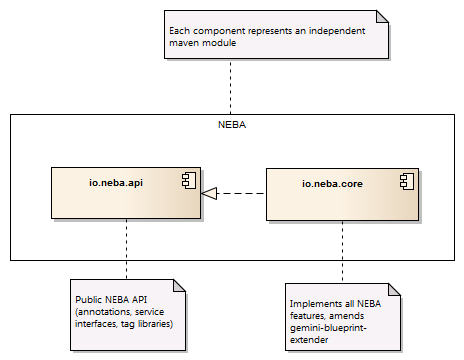
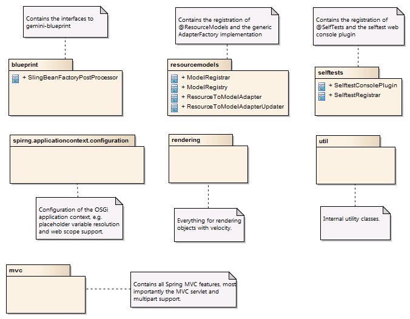
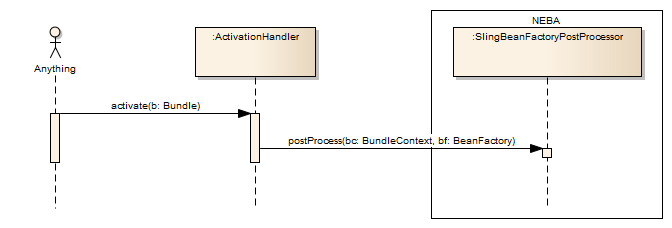
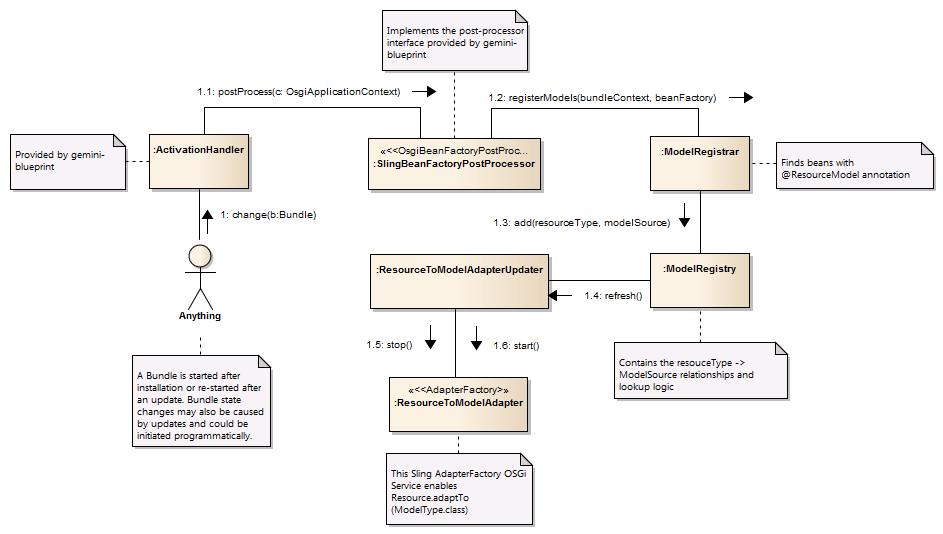

The following documentation is not meant to be complete in a sense of covering every implementation detail. It strives to illustrate the core design ideas, as well as the most important components and processes of NEBA.
The diagrams in this document are created using Sparx systems Enterprise Architect.
Download the EA file.NEBA amends Sling's open core with further open source software, which in turn is internally structured in modules. We will refer to such component compositions using the generic term container. NEBA is comprised of the following containers:
NEBA consists of the following modules. Each module is represented by a single OSGi bundle and a corresponding maven module.
Each package of the core represents a semantically grouped amount of features. The following diagram shows the most important feature groups and illustrates the overall design approach of the core
The most central feature of NEBA is the registration of Spring beans using the NEBA API, e.g. beans annotated with @ResourceModel, @Selftest and so forth. Here, NEBA attaches to the construction process of Spring application contexts. As soon as all beans are successfully created, but prior to the publication of the context, NEBA post-processes the context and looks up beans using NEBA API annotations or implementing NEBA API interfaces.
The registration of resource models and the subsequent management of the resource model metadata for mapping purposes account for the most valuable NEBA features. Likewise, they require a well-designed collaboration of context post-processing, metadata creation and -storage as well as updates of the generic resource model adapter factory. The following communication diagram illustrates the complete resource model registration process, from a bundle change event to the publication of the registered resource model metadata via a Sling adapter factory.
